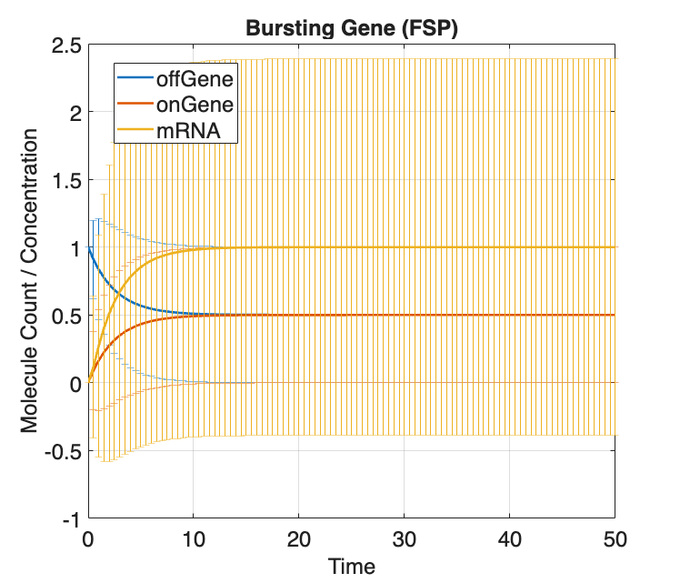
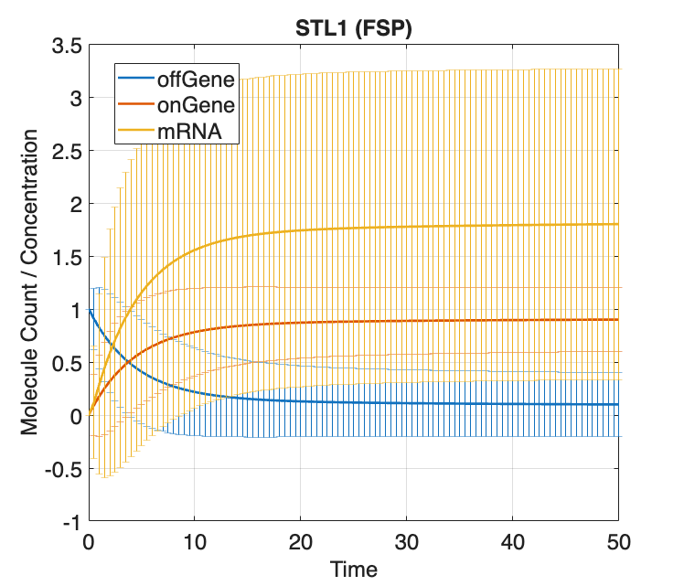
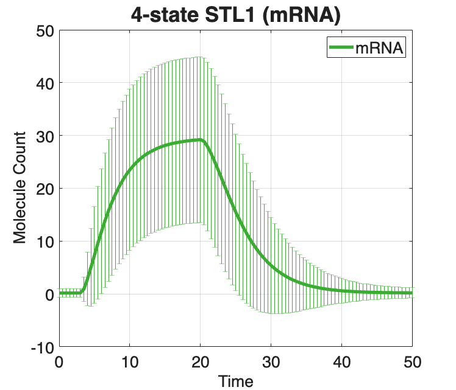
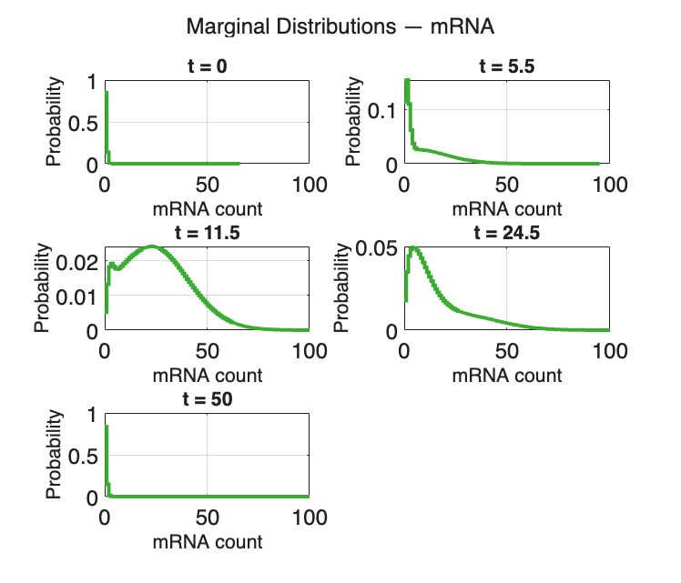

Contents
- example_4_SolveSSITModels_FSP
- Section 2.2: Finding and visualizing master equation solutions
- Preliminaries
- Ex(1): Use the stochastic Finite State Projection (FSP)
- Model:
- Ex(2): Use the stochastic Finite State Projection (FSP)
- STL1:
- Ex(3): Use the stochastic Finite State Projection (FSP)
- STL1 (4-state):
- Plots for FSP solutions:
- Save FSP models & solutions
example_4_SolveSSITModels_FSP
%%%%%%%%%%%%%%%%%%%%%%%%%%%%%%%%%%%%%%%%%%%%%%%%%%%%%%%%%%%%%%%%%%%%%%%%%%%
Section 2.2: Finding and visualizing master equation solutions
* Compute Finite State Projection (FSP) solutions
%%%%%%%%%%%%%%%%%%d%%%%%%%%%%%%%%%%%%%%%%%%%%%%%%%%%%%%%%%%%%%%%%%%%%%%%%%%%
Preliminaries
Use the models from example_1_CreateSSITModels clear close all
% example_1_CreateSSITModels % Load the models created in example_1_CreateSSITModels % load('example_1_CreateSSITModels.mat') % View model summaries: Model.summarizeModel STL1.summarizeModel STL1_4state.summarizeModel % Set the times at which distributions will be computed: Model.tSpan = linspace(0,50,101); STL1.tSpan = linspace(0,50,101); STL1_4state.tSpan = linspace(0,50,101); %%%%%%%%%%%%%%%%%%%%%%%%%%%%%%%%%%%%%%%%%%%%%%%%%%%%%%%%%%%%%%%%%%%%%%%%%%%
Species:
offGene; IC = 1; discrete stochastic
onGene; IC = 0; discrete stochastic
mRNA; IC = 0; discrete stochastic
Reactions:
Reaction 1:
s1: 1*offGene --> 1*onGene
w1: kon * offGene
Reaction 2:
s2: 1*onGene --> 1*offGene
w2: koff * onGene
Reaction 3:
s3: NULL --> 1*mRNA
w3: kr * onGene
Reaction 4:
s4: 1*mRNA --> NULL
w4: dr * mRNA
Model Parameters:
{'kon' } {[0.2000]}
{'koff'} {[0.2000]}
{'kr' } {[ 10]}
{'dr' } {[ 5]}
Species:
offGene; IC = 1; discrete stochastic
onGene; IC = 0; discrete stochastic
mRNA; IC = 0; discrete stochastic
Reactions:
Reaction 1:
s1: 1*offGene --> 1*onGene
w1: kon * offGene
Reaction 2:
s2: 1*onGene --> 1*offGene
w2: onGene*koff/(1+Hog1)
Reaction 3:
s3: NULL --> 1*mRNA
w3: kr * onGene
Reaction 4:
s4: 1*mRNA --> NULL
w4: dr * mRNA
Input Signals:
Hog1(t) = (a0+a1*exp(-r1*t)*(1-exp(-r2*t))*(t>0))
Model Parameters:
{'kon' } {[0.2000]}
{'koff'} {[0.2000]}
{'kr' } {[ 10]}
{'dr' } {[ 5]}
{'a0' } {[ 5]}
{'a1' } {[ 10]}
{'r1' } {[0.0040]}
{'r2' } {[0.0100]}
Species:
g1; IC = 1; discrete stochastic
g2; IC = 0; discrete stochastic
g3; IC = 0; discrete stochastic
g4; IC = 0; discrete stochastic
mRNA; IC = 0; discrete stochastic
Reactions:
Reaction 1:
s1: 1*g1 --> 1*g2
w1: k12*g1
Reaction 2:
s2: 1*g2 --> 1*g1
w2: (max(0,k21o*(1-k21i*Hog1)))*g2
Reaction 3:
s3: 1*g2 --> 1*g3
w3: k23*g2
Reaction 4:
s4: 1*g3 --> 1*g2
w4: k32*g3
Reaction 5:
s5: 1*g3 --> 1*g4
w5: k34*g3
Reaction 6:
s6: 1*g4 --> 1*g3
w6: k43*g4
Reaction 7:
s7: NULL --> 1*mRNA
w7: kr1*g1
Reaction 8:
s8: NULL --> 1*mRNA
w8: kr2*g2
Reaction 9:
s9: NULL --> 1*mRNA
w9: kr3*g3
Reaction 10:
s10: NULL --> 1*mRNA
w10: kr4*g4
Reaction 11:
s11: 1*mRNA --> NULL
w11: dr*mRNA
Input Signals:
Hog1(t) = A*(((1-(exp(1)^(-r1*(t-t0))))*exp(1)^(-r2*(t-t0)))/(1+((1-(exp(1)^(-r1*(t-t0))))*exp(1)^(-r2*(t-t0)))/M))^n*(t>t0)
Model Parameters:
{'t0' } {[ 3.1700]}
{'k12' } {[ 78]}
{'k21o'} {[ 192000]}
{'k21i'} {[ 3200]}
{'k23' } {[ 0.4020]}
{'k34' } {[ 7.8000]}
{'k32' } {[ 1.6200]}
{'k43' } {[ 2.2800]}
{'dr' } {[ 0.2940]}
{'kr1' } {[ 0.0468]}
{'kr2' } {[ 0.7200]}
{'kr3' } {[ 59.4000]}
{'kr4' } {[ 3.2400]}
{'r1' } {[ 0.0041]}
{'r2' } {[ 0.4260]}
{'A' } {[9.3000e+09]}
{'M' } {[6.4000e-04]}
{'n' } {[ 3.1000]}
Ex(1): Use the stochastic Finite State Projection (FSP)
approximation of the Chemical Master Equation (CME) to solve the time evolution of state space probabilities for the bursting gene example model from example_1_CreateSSITModels
%%%%%%%%%%%%%%%%%%%%%%%%%%%%%%%%%%%%%%%%%%%%%%%%%%%%%%%%%%%%%%%%%%%%%%%%%%%
Model:
Create a copy of the bursting gene model for FSP:
Model_FSP = Model;
% Ensure the solution scheme is set to FSP (default):
Model_FSP.solutionScheme = 'FSP';
% Set FSP 1-norm error tolerance:
Model_FSP.fspOptions.fspTol = 1e-4;
% Guess initial bounds on FSP StateSpace:
Model_FSP.fspOptions.bounds = [0,0,0,1,1,200];
% Have FSP approximate the steady state for the initial distribution
% by finding the eigenvector corresponding to the smallest magnitude
% eigenvalue (i.e., zero, for generator matrix A, d/dtP(t)=AP(t)):
Model_FSP.fspOptions.initApproxSS = false;
% This function compiles and stores the given reaction propensities
% into symbolic expression functions that use sparse matrices to
% operate on the system based on the current state. The functions are
% stored with the given prefix, in this case, 'Model_FSP':
Model_FSP = Model_FSP.formPropensitiesGeneral('Model_FSP');
% Solve with FSP:
[~,~,Model_FSP] = Model_FSP.solve;
% Plot marginal distributions at t=20:
Model_FSP.plotFSP(Model_FSP.Solutions,Model_FSP.species,'meansAndDevs')
%%%%%%%%%%%%%%%%%%%%%%%%%%%%%%%%%%%%%%%%%%%%%%%%%%%%%%%%%%%%%%%%%%%%%%%%%%%
 Ex(2): Use the stochastic Finite State Projection (FSP)
approximation of the Chemical Master Equation (CME) to solve the time evolution of state space probabilities for the time-varying STL1 yeast model from example_1_CreateSSITModels
%%%%%%%%%%%%%%%%%%%%%%%%%%%%%%%%%%%%%%%%%%%%%%%%%%%%%%%%%%%%%%%%%%%%%%%%%%%
STL1:
Create a copy of the time-varying STL1 yeast model for FSP:
STL1_FSP = STL1;
% Ensure the solution scheme is set to FSP (default):
STL1_FSP.solutionScheme = 'FSP';
% Set FSP 1-norm error tolerance:
STL1_FSP.fspOptions.fspTol = 1e-4;
% Guess initial bounds on FSP StateSpace:
STL1_FSP.fspOptions.bounds = [0,0,0,1,1,200];
% Have FSP approximate the steady state for the initial distribution
% by finding the eigenvector corresponding to the smallest magnitude
% eigenvalue (i.e., zero, for generator matrix A, d/dtP(t)=AP(t)):
STL1_FSP.fspOptions.initApproxSS = false;
% This function compiles and stores the given reaction propensities
% into symbolic expression functions that use sparse matrices to
% operate on the system based on the current state. The functions are
% stored with the given prefix, in this case, 'STL1_FSP':
STL1_FSP = STL1_FSP.formPropensitiesGeneral('STL1_FSP');
% Solve with FSP:
[~,~,STL1_FSP] = STL1_FSP.solve;
% Plot marginal distributions at t=20:
STL1_FSP.plotFSP(STL1_FSP.Solutions, STL1_FSP.species,'meansAndDevs')
%%%%%%%%%%%%%%%%%%%%%%%%%%%%%%%%%%%%%%%%%%%%%%%%%%%%%%%%%%%%%%%%%%%%%%%%%%%
 Ex(3): Use the stochastic Finite State Projection (FSP)
approximation of the Chemical Master Equation (CME) to solve the time evolution of state space probabilities for the 4-state time-varying STL1 yeast model from example_1_CreateSSITModels
%%%%%%%%%%%%%%%%%%%%%%%%%%%%%%%%%%%%%%%%%%%%%%%%%%%%%%%%%%%%%%%%%%%%%%%%%%%
STL1 (4-state):
Create a copy of the time-varying STL1 yeast model for FSP:
STL1_4state_FSP = STL1_4state;
% Ensure the solution scheme is set to FSP (default):
STL1_4state_FSP.solutionScheme = 'FSP';
% Set FSP 1-norm error tolerance:
STL1_4state_FSP.fspOptions.fspTol = 1e-4;
% Guess initial bounds on FSP StateSpace:
STL1_4state_FSP.fspOptions.bounds = [1,1,1,1,200];
% Have FSP approximate the steady state for the initial distribution
% by finding the eigenvector corresponding to the smallest magnitude
% eigenvalue (i.e., zero, for generator matrix A, d/dtP(t)=AP(t)):
STL1_4state_FSP.fspOptions.initApproxSS = true;
% This function compiles and stores the given reaction propensities
% into symbolic expression functions that use sparse matrices to
% operate on the system based on the current state. The functions are
% stored with the given prefix, in this case, 'STL1_4state_FSP':
STL1_4state_FSP = ...
STL1_4state_FSP.formPropensitiesGeneral('STL1_4state_FSP');
% Solve Model:
[~,~,STL1_4state_FSP] = STL1_4state_FSP.solve;
Plots for FSP solutions:
Means only: STL1_4state_FSP.plotFSP(STL1_4state_FSPsoln,... STL1_4state_FSP.species, 'means')
% Means and standard deviations: STL1_4state_FSP.plotFSP(STL1_4state_FSP.Solutions,... STL1_4state_FSP.species(5),'meansAndDevs',[],[],{'linewidth',4},... Title='4-state STL1 (mRNA)', TitleFontSize=26,... Colors=[0.23,0.67,0.2], AxisLabelSize=20, TickLabelSize=20,... XLabel='Time', YLabel='Molecule Count',... LegendFontSize=20, LegendLocation='northeast'); % Marginal distributions: STL1_4state_FSP.plotFSP(STL1_4state_FSP.Solutions,... STL1_4state_FSP.species(5), 'marginals', [1,12,24,50,101],... [], {'linewidth',3}, Colors=[0.23,0.67,0.2], XLim=[0,100]) % Joint distributions (warning: can be slow for many parameters!): % STL1_4state_FSP.plotFSP(STL1_4state_FSPsoln,... % STL1_4state_FSP.species(5), 'joints') 
Save FSP models & solutions
saveNames = unique({
'Model_FSP'
'STL1_FSP'
'STL1_4state_FSP'
});
save('example_4_SolveSSITModels_FSP',saveNames{:})